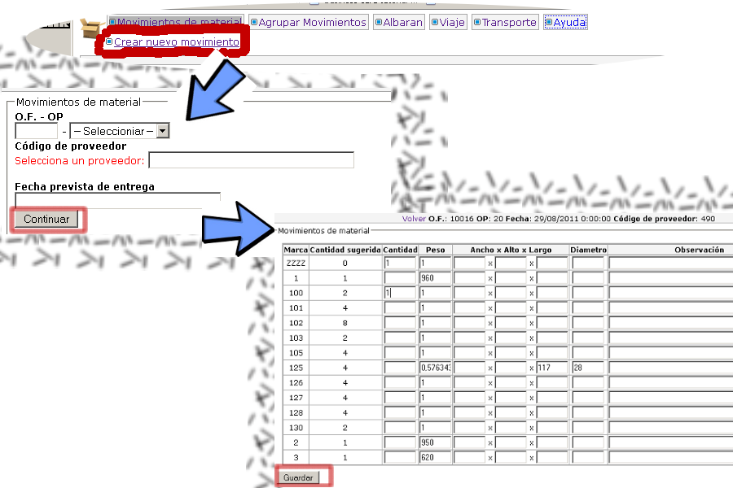
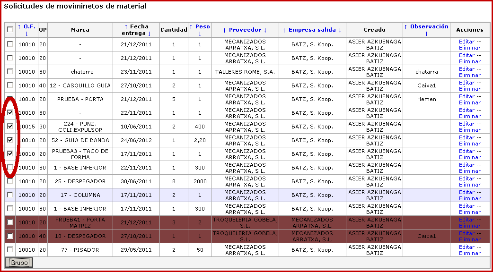
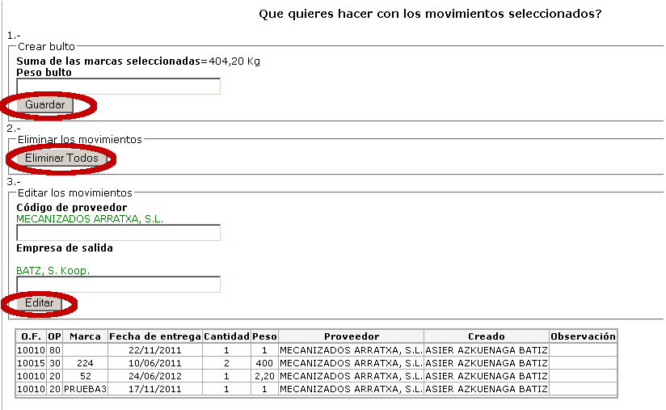
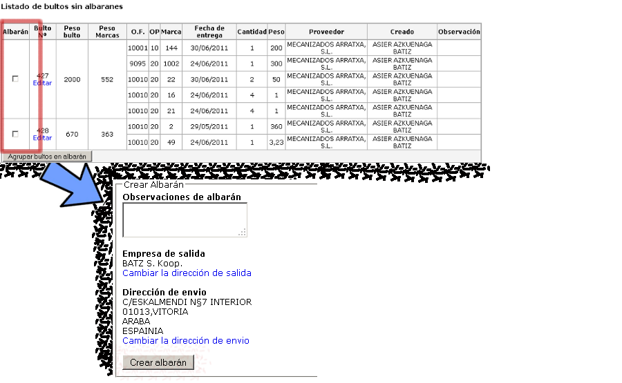
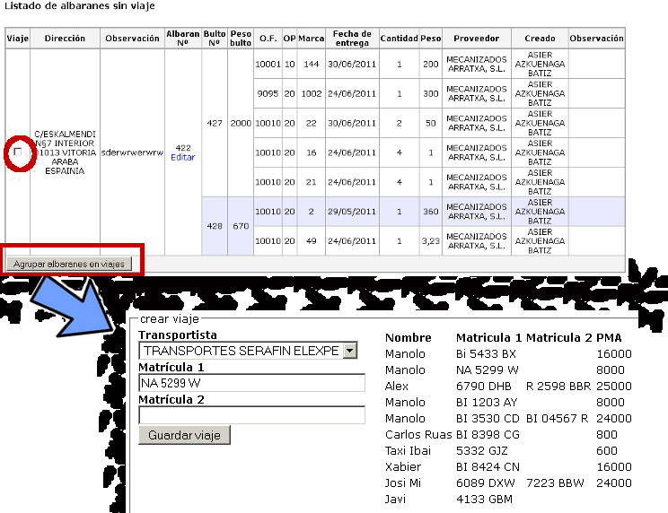
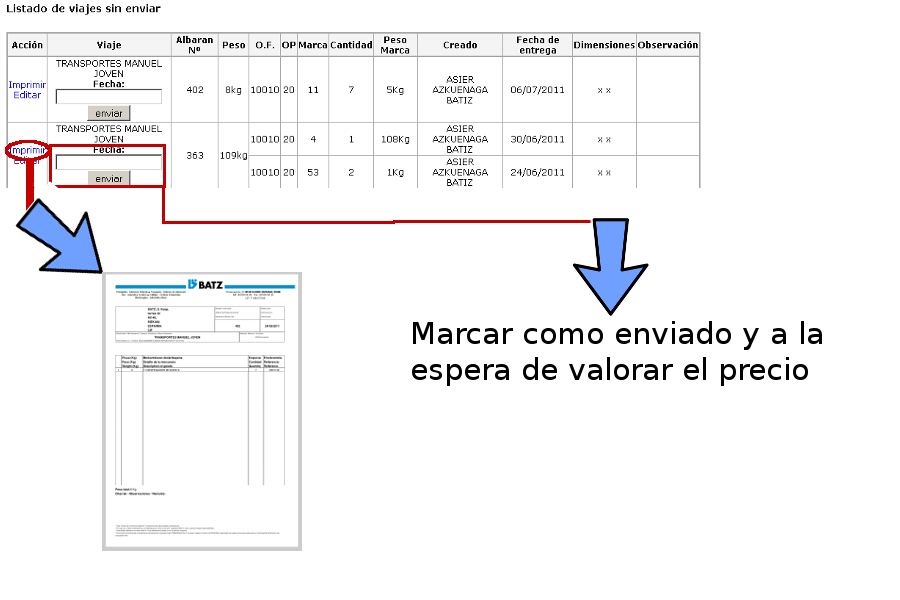
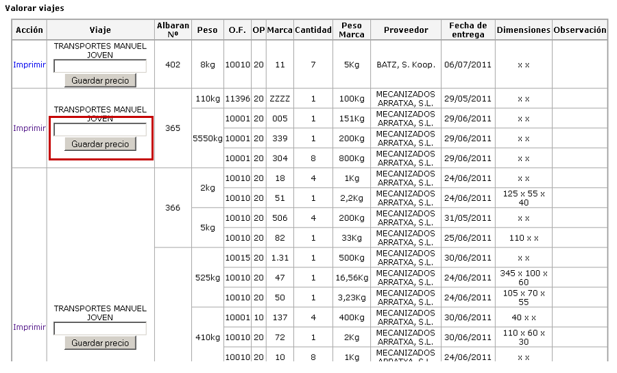

SAS2
La aplicación SAS2, ha sido diseñada para el control de movimientos de material que salen desde el almacén a los proveedores.El flujo de la aplicación es el siguiente:
Paso 1: Movimientos de material
En el momento en que necesitemos enviar una marca al proveedor para cualquier tipo de tratamiento, creamos un movimiento de material. Como mostramos en la imagen
1.1, la creación de movimientos de material se compone de 2 pasos:
- La selección de OF, operación, transportista y fecha
- La selección de marcas. Las marcas se seleccionan introduciendo cantidades. El peso aunque obligatorio, no tiene por que ser exacto. En los casos
en los que no exista, el sistema introducirá 1 por defecto.

Una vez introducida la cantidad de las marcas que queremos enviar y haber guardado, se nos mostrara el listado de movimientos.
Paso 2: Agrupaciones
Desde el listado de movimientos, podemos hacer grupos como indicamos en la imagen 2.1. Estos, equivaldrían a las cajas físicas en las que se enviara el material.

Una vez seleccionados y clicado el boton "grupo" tenemos 3 opciones:
- Crear un bulto. Para ello tendremos que introducir el peso de la caja
- Eliminar todos los movimientos que hemos seleccionado
- Editar todos los elementos que hemos seleccionado. Podemos editar el proveedor o la empresa de salida

Después de guardar el bulto la aplicación redirecciona al listado de bultos actuales.
Paso 3: Albaranes
Desde el listado de bultos, podemos agrupar los bultos en un albarán. El criterio para crear un albarán es la de destino por camión. Es decir un camión va a llevar tantos
albaranes como destinos visite en un viaje. Los pasos a seguir para agrupar los bultos en un albarán, se muestran en la imagen 3.1.

Una vez guardado el albarán, la aplicación redirige al listado de albaranes.
Paso 4: Viajes
Desde el listado de albaranes, podemos agrupar los albaranes en viajes. Los albaranes que agrupemos en un mismo viaje, deben de partir en el mismo camión. El criterio
para crear albaranes esta explicado en
el punto anterior. Para proceder a crear el viaje, seguiremos los pasos que se indican en la imagen 4.1.

Transporte
Desde el listado de viajes, podemos abrir el Pdf para la impresión de albaranes. También podemos marcar un viaje como enviado. Esto indicara que el viaje ya salio del almacén
y la fecha en la que lo hizo.

Valoración
El último paso es el de valorar los envíos realizados. El reparto del precio por operación, se calcula partiendo del la suma de los pesos de los bultos y
dividiendo estos equitativamente por peso de movimiento de material.
